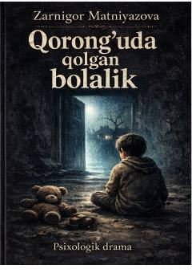

QQUrush davrida qorong'ulik va sinovlar ichida ulg'ayayotgan bolalar haqidagi ta'sirli hikoya.
Mazkur asar urush davrining og'ir sinovlari va qorong'u kunlarida ulg'ayishga majbur bo'lgan ikki jajji qalbning ta'sirli hikoyasini bayon qiladi. Muallif bolalikning begunoh olami va urush keltirib chiqargan fojealarni bolaning o'ziga xos teran nigohi orqali ochib beradi.